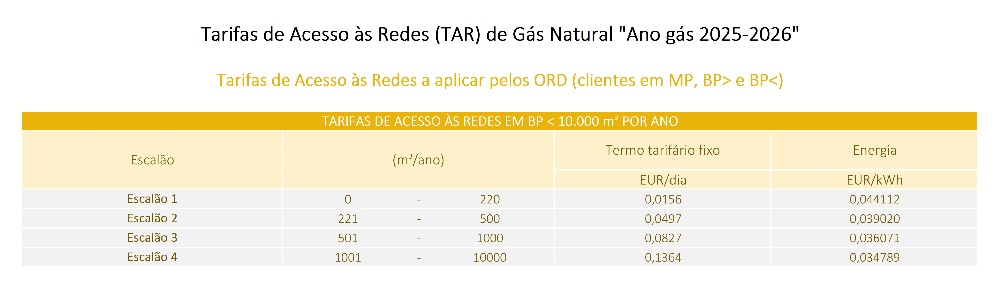

Tarifas de Acesso às Redes (TAR) Gás Natural "Ano gás 2025-2026"
As Tarifas de Acesso às Redes, comummente conhecidas como TAR, são valores regulados pela ERSE que remuneram o uso das infraestruturas de transporte e distribuição de energia. Estas tarifas são pagas por todos os consumidores, independentemente do comercializador escolhido, e são uma componente fundamental da sua fatura de gás natural.
A tabela abaixo apresenta os valores em vigor de 01/10/2025 a 30/09/2026.

Veja como as TAR afetam o seu custo final
Os meus simuladores já incluem estes valores em todos os cálculos para garantir a máxima precisão.
Simulador de Gás Natural